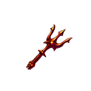
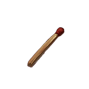
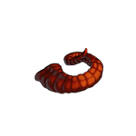
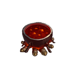

Получено: файл; исходный URL. Иллюстрация «Адская коллекция» из каталога ViveR_9, сопоставлена по точному названию; возможны отличия версий. Оригинальный файл без перекодирования; авторство отдельно не установлено. Страница: источник.

Адская коллекция
Браузерная социальная версия; историческая статья; дата редакции неизвестна- Тип
- Коллекции
- Версия и дата
- Браузерная социальная версия; историческая статья; дата редакции неизвестна
Элементы коллекции












Данные по источнику · Браузерная социальная версия · историческая статья; дата редакции неизвестна
Предварительно: один материал, требуется сверка. Требуется сверка.
- Состав (источник Zombie-island)
- Трезубец; Белое перо; Спичка; Рог; Джакузи.
- Награда (источник Zombie-island)
- 15 Палочка; 1 Шоколад.
- Где копать Адскую коллекцию в Зомби Ферме лопатами
- Элитный букет; Зимняя вишня.
- Адскую коллекцию можно нарыть под мрамором в Мраморной пещере друга
- Мраморная пещера; Белый мрамор 1; Белый мрамор 2; Белый мрамор 3; Зеленый мрамор 1; Зеленый мрамор 2; Зеленый мрамор 3; Черный мрамор 1; Черный мрамор 2; Черный мрамор 3.
- Адскую коллекцию можно найти в сундуках под кристаллами в Подземелье
- Палочка-выручалочка; Кристаллы.
- Адская коллекция попадается в ведрах Рыбаков и мешках Звездочетов
- Рыбак; Рыбак с мозгами; Звездочет; Звездочет за зомбаксы.
- Адскую коллекцию можно выиграть в рулетке
- Вишнёвый автомат.
- Адскую коллекцию можно найти в ценностях и сокровищах
- Сундук Вишни; Полосатое; Коллекционер 2; Сундук Чудовища 3; Цирковой шатер; Новогодняя елка за дубл; Новогодняя елка за зб; Биг-бен.
- Адскую коллекцию можно привезти с пиратских островов
- Пиратский сундук.
- Страница сайта Адская коллекция
- Описание:.
Данные по источнику · ВКонтакте, ZombieS Forever · дата редакции не установлена
Предварительно: Историческая фанатская страница; независимость от других источников не установлена. Возможны различия версий и дат.. Требуется сверка.
Данные по источнику · браузерная версия; платформа не указана · дата редакции не установлена
Предварительно: Содержимое списка: изображения и колонки могут терять смысл при извлечении текста; отдельная страница и дата не проверены. Подписи alt иногда ошибочны.. Требуется сверка.
- Текст карточки из каталога
- 15 Палочек-выручалочек и Шоколад Трезубец Белое перо Спичка Рог Джакузи Где копать (Палочками-выручалочками): В "Мраморной пещере" - Чёрный мрамор, Белый мрамор. В подземельях, кликая Палочкой-выручалочкой на подземные ресурсы. Адская выпадает в Нижнем днище из щупалец, в пещере ЗУ из коричневых пирамидок (в горошек) в сундуках. Марафонец, Флаг Марафонца
Данные по источнику · браузерная версия; на сайте указана игра ВКонтакте · дата редакции не установлена
Предварительно: Исторический текст; сильно совпадает со справкой Zommbie.at.ua, независимость не доказана. Отрицания и доступность могут измениться с патчем.. Требуется сверка.
- Где искать по странице «Зомбастики»
- Щупальца (15 единиц) в Нижнем днище.
Данные по источнику · историческая браузерная версия, платформа не указана · 10.01.2014 — дата в каталоге; дата редакции материала неизвестна
Предварительно: Фанатский список без вероятностей и уточнения площадки; независимость от других источников не установлена.. Требуется сверка.
- Где искать по списку сайта
- Щупальца (15 единиц) в Нижнем днище
- Оговорка
- Список может относиться к разным условиям, инструментам и периодам игры; не доказывает гарантированное выпадение. Заявления «только» и «невозможно» относятся лишь к времени и версии источника.
Данные по источнику · историческая браузерная игра; площадка не уточнена · 25.02.2013 — дата каталога; редакция неизвестна
Предварительно: Проверен текст в каталоге сайта; вероятность выпадения не указана. Исторические версии и даты могут различаться; списки и награды требуют сверки, независимость сайта от других справочников не установлена.. Требуется сверка.
- Награда в источнике
- 15 палочек-выручалочек и 1 шоколад
- Места в источнике
- Чёрный и белый мрамор в Мраморной пещере, подземные ресурсы с палочкой, щупальца Нижнего днища, сундуки из коричневых пирамидок в Пещере ЗУ, Марафонец и его флаг.
Связанные сущности
нет проверенных связей — требуется сверка.
Источники
- прочитано: Zombie-island.moy.su; проверка 2026-11-21
- Прочитана статья или строка таблицы; требуется сверка
- ZOMBIA: прочитана карточка в списке
- Ссылка на отдельную страницу; отдельно не проверена
- Зомбастики: прочитана соответствующая строка; возможная копия другого справочника
- ViveR_9: изображение в каталоге коллекций; совпадение названия
- zommbie.at.ua: где искать коллекции
- zombi-ferma.ucoz.net: каталог коллекций